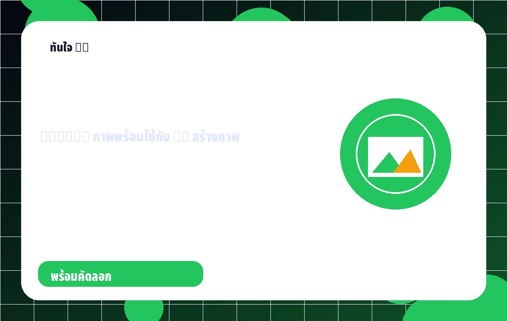
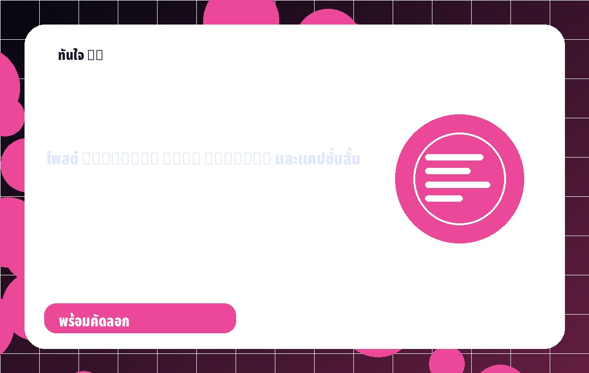
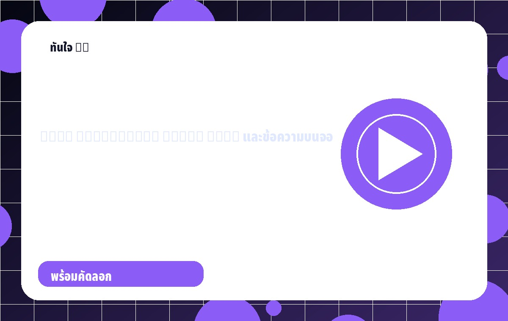
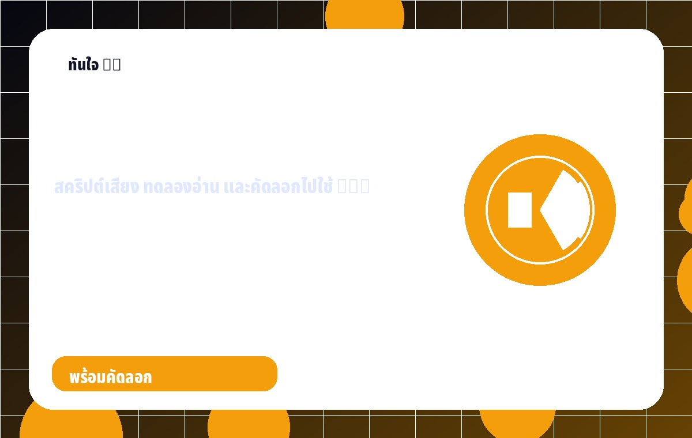
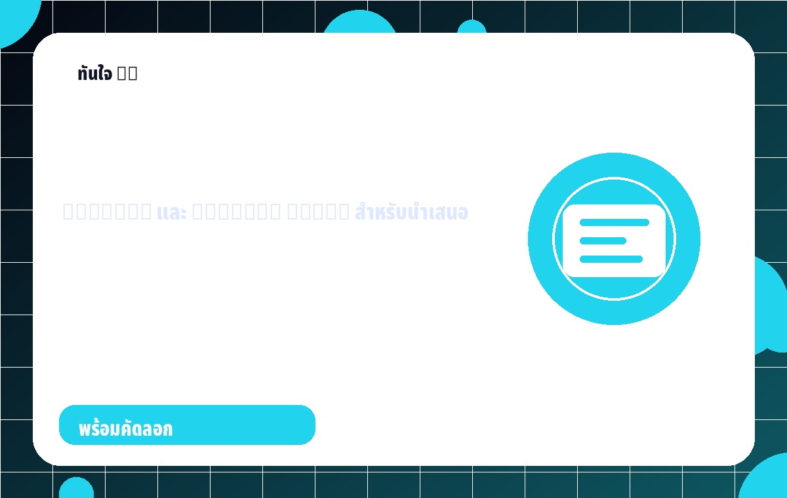
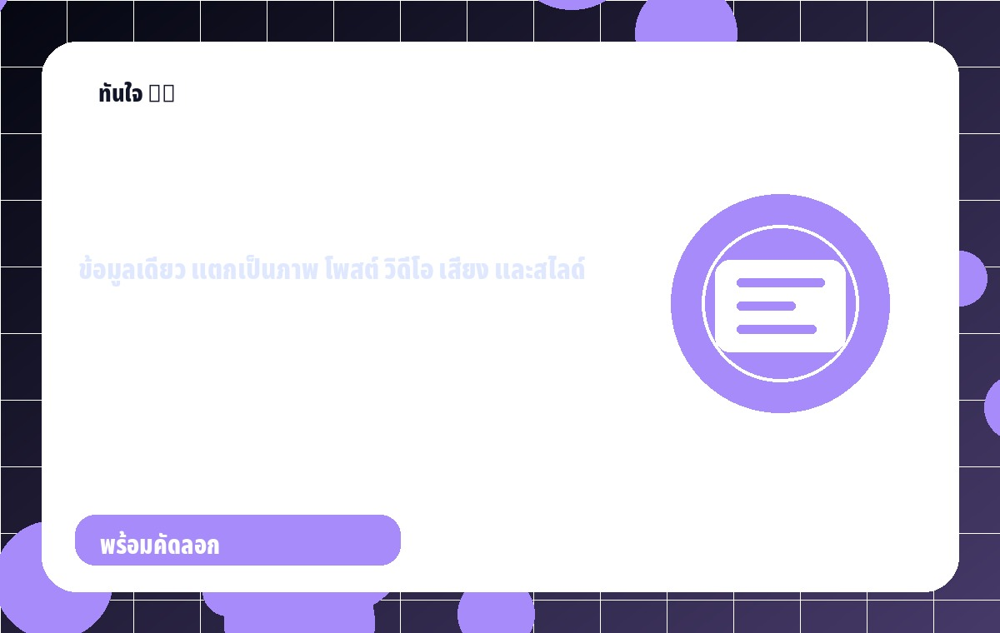

AI MEDIA HUB
สวัสดีครับ! 👋
พร้อมใช้งาน
ทันใจ AI Studio • สร้างสื่อไว ด้วยพลัง AI
AI Media Hub สำหรับงานประชาสัมพันธ์ไทย
ผู้ช่วยคิดงาน จัดคำสั่ง สคริปต์สรุปงาน วางแผนวิดีโอ ทำสคริปต์เสียง และเตรียมสไลด์ เลือกทำทีละอย่างได้ หรือให้ระบบแนะนำทางไปต่อด้วย AI Router
Imageสร้างภาพ
Voiceเสียงพากย์
Socialโพสต์
VideoStoryboard
เลือกทำเฉพาะสิ่งที่ต้องการ
ไม่บังคับให้ทำครบทุกอย่าง อยากคิดโพสต์อย่างเดียว ทำวิดีโอเรื่องใหม่ หรือทำเสียงพากย์แยกก็ทำได้

สร้างภาพPrompt ภาพพร้อมใช้
สคริปต์สรุปงานใช้ต่อได้ทั้งนำเสนอ ทำคลิป และโพสต์โซเชียล
ทำวิดีโอ / ทำคลิปStoryboard + Voice Over
เสียงพากย์สคริปต์ + ทดลองอ่าน
ทำสไลด์Outline + Speaker Notes
สร้างชุดสื่อครบชุดจากข้อมูลเดียว🧭 AI Router
บอกระบบว่าพี่อยากทำอะไร แล้วระบบจะแนะนำเมนู ผลลัพธ์ และเครื่องมือปลายทางให้
🖼️ สร้างภาพ
สร้าง Prompt ภาพและคำสั่งออกแบบสำหรับนำไปใช้ต่อกับ AI สร้างภาพหรือ Canva
✍️ สคริปต์สรุปงาน
สคริปต์สรุปงาน แคปชั่น และข้อความ Line แยกจากงานอื่นได้
🎬 ทำวิดีโอ
สร้าง Hook, Storyboard, Voice Over และข้อความบนจอสำหรับคลิป
🎙️ เสียงพากย์
สร้างสคริปต์เสียงพากย์ พร้อมทดลองอ่านเสียง และคัดลอกไปใช้กับ TTS / CapCut
📊 ทำสไลด์
จัด Outline, หัวข้อสไลด์ และ Speaker Notes สำหรับนำเสนอ
🧩 สร้างชุดสื่อ
กรอกครั้งเดียว แล้วแตกเป็นภาพ โพสต์ วิดีโอ เสียงพากย์ และสไลด์
⭐ Prompt Hub
คลังคำสั่งสำเร็จรูปสำหรับงานประชาสัมพันธ์ไทย
🚀 Destination Hub
รวมทางลัดไปเครื่องมือปลายทางที่ใช้ต่อ โดยไม่ผูกกับแบรนด์ใดเป็นพิเศษ
📁 โปรเจกต์
เก็บผลลัพธ์ที่ใช้งานบ่อยไว้ในเครื่องนี้
⭐ ตัวอย่างงาน
เลือกตัวอย่างแล้วนำไปต่อยอดได้ทันที
⚙️ คู่มือระบบ
วิธีใช้งาน
- เลือกเครื่องมือที่ต้องการ
- กรอกหัวข้อและรายละเอียด
- กดสร้าง
- คัดลอกไปวางในเครื่องมือที่ต้องการ
การใช้เสียงพากย์
- เข้าเมนูเสียงพากย์
- เลือกความยาวและโทนเสียง
- กดสร้างสคริปต์เสียง
- ทดลองอ่าน หรือคัดลอกไปใช้กับ TTS/CapCut
สงวนสิทธิ์การใช้งาน Dashboard และระบบ “ทันใจ AI Studio” สำหรับผู้ได้รับสิทธิ์เท่านั้น ห้ามคัดลอก ดัดแปลง แจกจ่าย เผยแพร่ต่อ หรือนำไปใช้ในเชิงพาณิชย์โดยไม่ได้รับอนุญาต
พัฒนาโดย Thanawid Ritchi
พัฒนาโดย Thanawid Ritchi